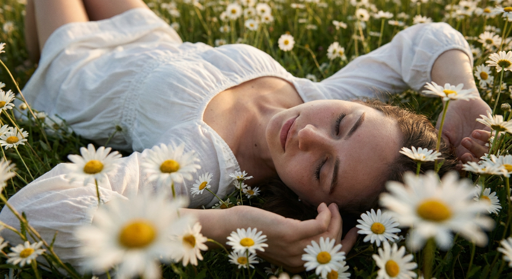
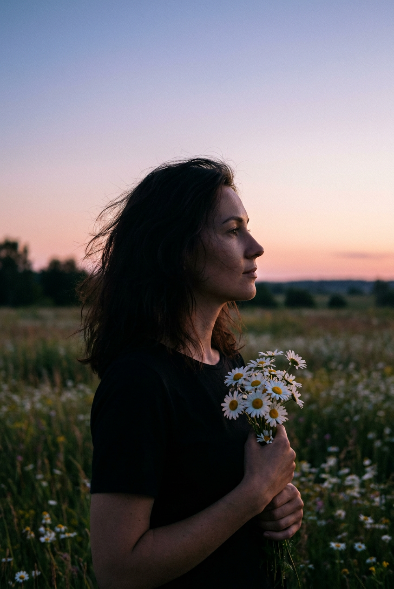
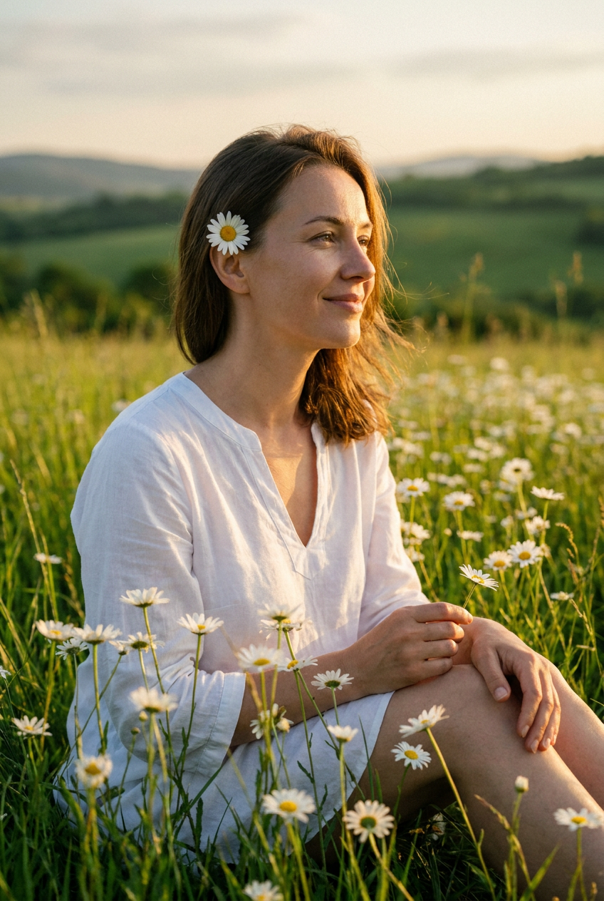
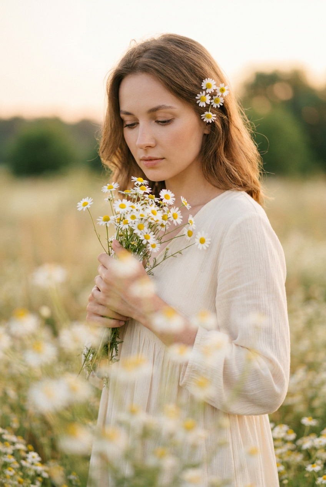
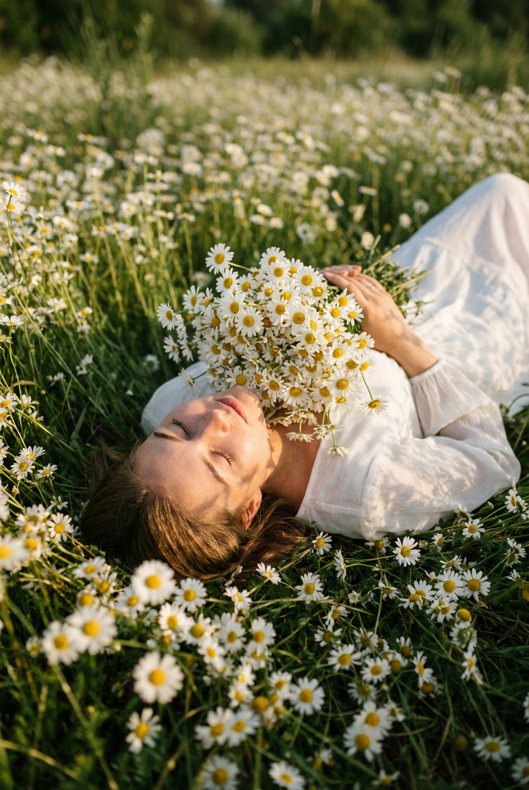
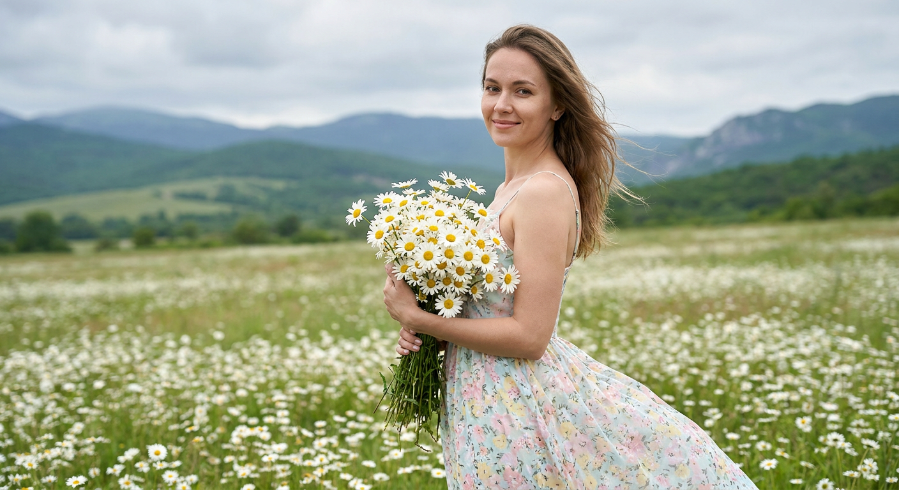
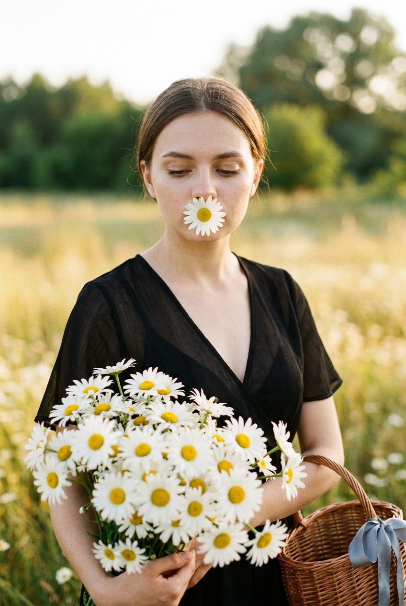
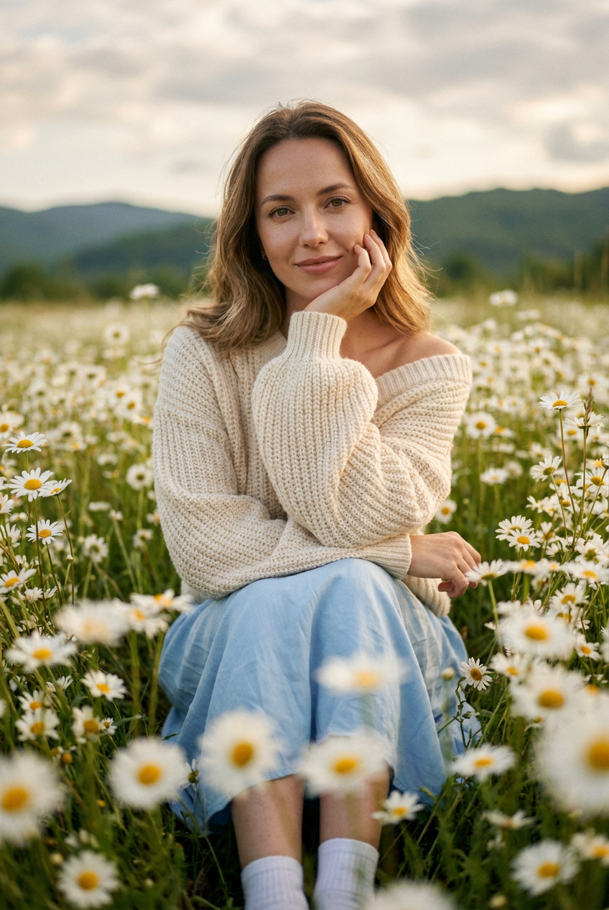
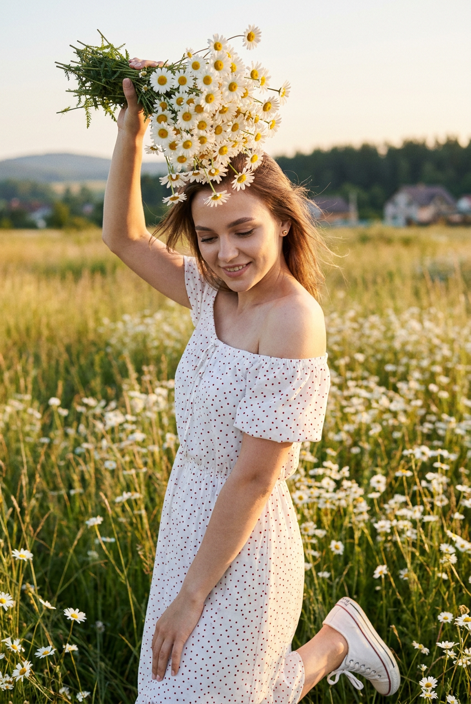
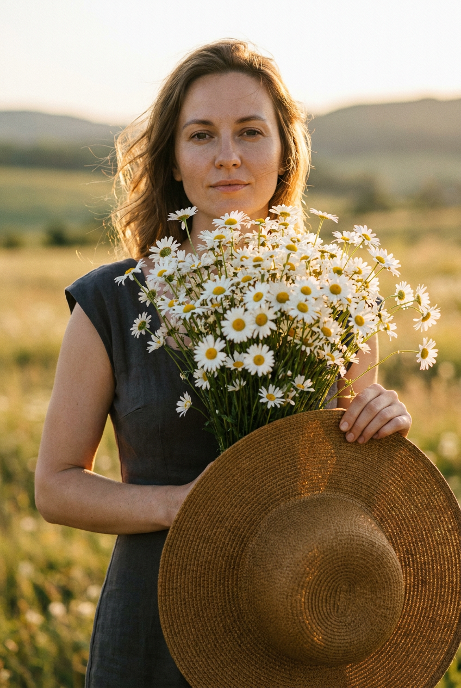

ИИ-фотосессия с ромашками: 10 промптов для нейросети

Летний кадр с ромашками легко превратить в безликую открытку: нейросеть меняет черты лица, путает руки, делает цветы пластиковыми, а ткань одежды — неестественной. Хороший промпт решает это ещё до генерации: задаёт позу, свет, фокус, настроение и детали окружения.
В подборке — 10 сценариев для ИИ-фотосессии с ромашками: от снимка в траве и портрета с цветком за ухом до сумеречного силуэта, букета у лица и контрастного образа в чёрном платье. Каждый текст можно использовать как основу и адаптировать под свой референс.
Как сгенерировать такое фото: пошагово
Нужен снимок анфас при ровном свете, лицо в кадре целиком, без тёмных очков и головных уборов. Разрешение от 1000 пикселей по короткой стороне. Чем чётче исходник, тем точнее модель повторит черты.
Выберите сценарий ниже и нажмите «Копировать» — текст уйдёт в буфер целиком, вместе с командой сохранения внешности. Эта команда стоит первой строкой и отвечает за то, чтобы на выходе было ваше лицо, а не случайное.
Кнопка «Сгенерировать» рядом с каждым промптом открывает модель в новой вкладке. Nano Banana Pro работает с референсом лица — в отличие от моделей, которые генерируют портрет с нуля и узнаваемость теряют.
Промпт — в поле ввода, портрет — через загрузку референса. Порядок значения не имеет, но без референса команда сохранения внешности работать не будет: модели нечего сохранять.
Для сторис и ленты берите 9:16, для превью и обложек — 4:3. Первый результат редко идеален: если поза или свет ушли не туда, поправьте соответствующую часть промпта и запустите заново. Обычно хватает двух-трёх итераций.
10 промптов для генерации
1. Ромашки вокруг лица
Строго сохранить внешность по загруженному референсу: черты лица, пропорции, мимику и текстуру кожи без изменений. Фотореалистичный летний кадр с мягким кинематографичным film look. Девушка с лицом по загруженному референсу: точно передать индивидуальные черты, форму глаз, бровей, носа и губ, овал лица, естественную мимику и реальные пропорции, не менять внешность. Она лежит на зелёной траве в цветочном поле, голова расположена ближе к центру вертикального кадра, глаза закрыты, выражение расслабленное и безмятежное. Камера находится очень низко, почти на уровне поля, будто зритель погружается в ромашки. На девушке белое лёгкое летнее платье со сборчатой фактурой на лифе или рукавах; ткань естественно повторяет позу. Рядом с головой видна поднятая рука, части рук и ног закрыты одеждой. Вокруг, особенно на переднем плане, густо растут белые ромашки с жёлтыми серединками: цветы частично перекрывают кадр, передний план мягко размыт. Естественный дневной свет, реалистичная кожа, малая глубина резкости, объектив 50 мм, вертикальная композиция, высокая детализация.
2. Силуэт на закате

Строго сохранить внешность по загруженному референсу: черты лица, пропорции, мимику и текстуру кожи без изменений. Фотореалистичный кинематографичный twilight-портрет в вертикальном формате. Женщина стоит среди цветов, показана в профиль и смотрит влево, в сторону далёкого горизонта. Лицо ориентировано по загруженному референсу: сохранить форму глаз, бровей, носа, губ, овал, мимику и индивидуальные пропорции без изменения внешности. Волосы слегка растрёпаны ветром. Она держит у груди или талии небольшой букет белых ромашек с жёлтыми центрами. Главный акцент — сумеречный свет: небо плавно переходит от розово-персикового у горизонта к голубовато-фиолетовому в верхней части, фигура и букет остаются в полутени и читаются почти силуэтом. Спокойное задумчивое настроение, без пересветов и проваленных контуров, натуральные края фигуры. Эффект cinematic dusk, объектив 85 мм, диафрагма f/2.8, мягкое боке, реалистичная цветокоррекция.
3. Улыбка в золотом свете

Строго сохранить внешность по загруженному референсу: черты лица, пропорции, мимику и текстуру кожи без изменений. Летний фотореалистичный портрет на природе, снятый в golden hour. Девушка с лицом по загруженному референсу: точно сохранить её черты, форму глаз, бровей, носа, губ, овал лица, естественные пропорции и живую мимику. Женщина сидит или полусидит среди высокой зелёной травы и ромашек, корпус развёрнут к свету, лицо в мягком 2/3 профиле. Она улыбается и смотрит прямо в камеру либо немного мимо неё. Кожа настоящая, с естественной текстурой, без пластикового эффекта; макияж лёгкий, с выразительными бровями, натуральным тоном и мягким оттенком губ. Волосы немного подхватывает ветер. За правым ухом или на правом виске закреплена одна белая ромашка с жёлтой серединкой. На ней воздушная светлая хлопковая туника или платье с V-образным вырезом, заметной складкой у груди и свободными рукавами; ткань лёгкая, но не выглядит чрезмерно прозрачной. Объектив 50 мм, тёплые блики, малая глубина резкости.
4. Букет и цветочное окно

Строго сохранить внешность по загруженному референсу: черты лица, пропорции, мимику и текстуру кожи без изменений. Фотореалистичный портрет в мягком dreamy film look. Женщина стоит в поле ромашек и слегка наклоняется в сторону, опустив взгляд на небольшой букет в руках. Выражение лица спокойное, задумчивое, губы сомкнуты; кожа натуральная, макияж деликатный, оттенки лица тёплые. Внешность должна соответствовать загруженному референсу: сохранить индивидуальные черты, форму глаз, бровей, носа, губ, овал и естественную мимику без изменения лица. В волосах, на проборе, у виска и по линии лба закреплены несколько маленьких белых ромашек с жёлтыми серединками. Вокруг растёт очень много цветов. Передний план заполнен крупными полупрозрачными ромашками, сильно размытыми и образующими эффект цветочного окна; лепестки выглядят живыми, с тонкими тенями, без пластиковой фактуры. Букет небольшой, но хорошо различимый. Тёплый рассеянный свет, вертикальный портрет, объектив 85 мм, f/2, естественное боке.
5. Букет над лицом

Строго сохранить внешность по загруженному референсу: черты лица, пропорции, мимику и текстуру кожи без изменений. Фотореалистичный editorial-кадр с природным film look. Девушка лежит на спине в центре густого поля белых ромашек с жёлтыми серединками. Камера находится высоко, почти строго сверху, чтобы в изображении читались цветы по всей площади и диагональ тела. Голова расположена ближе к нижнему краю вертикального кадра, лицо обращено вверх, глаза закрыты, поза расслабленная, выражение умиротворённое. Лицо соответствует загруженному референсу: сохранить реальные черты, форму глаз, бровей, носа, губ, овал и пропорции без изменения внешности. Руки согнуты и подняты перед лицом; девушка держит большой плотный букет ромашек на уровне лица и груди. Цветы частично закрывают подбородок и нижнюю часть лица, становясь главным объектом композиции. На ней светлая летняя одежда, видимая между цветами. Естественные тени от букета, дневной мягкий свет, объектив 35 мм с верхней точки, высокая детализация лепестков и травы.
6. Ромашки на фоне холмов

Строго сохранить внешность по загруженному референсу: черты лица, пропорции, мимику и текстуру кожи без изменений. Фотореалистичный портрет на природе, вертикальный средний план примерно от талии до головы. Девушка стоит среди широкого поля ромашек, слегка повёрнута в профиль, смотрит в камеру и мягко улыбается. Лицо выполнить по загруженному референсу, сохранив индивидуальные черты, форму глаз, бровей, носа, губ, овал лица, натуральную мимику и пропорции. Кожа чистая, но реалистичная, с лёгким естественным бликом; макияж ненавязчивый. В руках большой букет белых ромашек с жёлтыми серединками, цветы частично закрывают нижнюю часть рук. На девушке светлое летнее платье с тонкими бретелями и очень мелким деликатным цветочным принтом в пастельных оттенках; ткань фактурная, струящаяся, со свободными мягкими складками. На заднем плане — зелёные холмы или невысокие горы, размытая растительность, широкое поле и небо с мягкими облаками. Пасмурный дневной свет, ощущение свежего ветра, волосы слегка развеваются. Объектив 50 мм, натуральные цвета, умеренное боке.
7. Цветок перед лицом

Строго сохранить внешность по загруженному референсу: черты лица, пропорции, мимику и текстуру кожи без изменений. Художественный фотореалистичный кадр с мягким golden hour film look. Девушка стоит на летней лужайке или в поле, опустив взгляд; глаза полуприкрыты, настроение тихое и задумчивое. Один белый цветок ромашки с жёлтой текстурной серединкой находится перед лицом и закрывает область носа и губ. В руках женщина держит большой букет, который перекрывает нижнюю часть кадра и грудь. Лепестки должны иметь тонкие естественные тени, а жёлтые центры — заметную живую фактуру. Внешность повторяет загруженный референс: сохранить черты лица, форму глаз, бровей, носа, губ, овал, мимику и реальные пропорции без изменения. На ней чёрное лёгкое полупрозрачное платье с короткими рукавами и V-образным вырезом, ткань мягко струится. Сбоку или внизу видна плетёная коричневая корзина из ротанга с серо-голубой лентой или тканью, выступающей наружу. Тёплый свет, летний фон, объектив 50 мм, естественная глубина резкости.
8. Молочный свитер в поле

Строго сохранить внешность по загруженному референсу: черты лица, пропорции, мимику и текстуру кожи без изменений. Фотореалистичный кинематографичный портрет о естественной красоте. Женщина стоит в густом поле белых ромашек с жёлтыми серединками, кадр построен от груди или талии. Она смотрит прямо в объектив и улыбается мягко, доброжелательно и спокойно; пальцы правой руки касаются щеки или подбородка. Лицо должно точно соответствовать загруженному референсу: сохранить форму глаз, бровей, носа, губ, овал лица, индивидуальные пропорции и натуральную мимику. Волосы имеют реальную текстуру и аккуратные световые блики. На ней тёплый вязаный свитер молочного или кремового цвета с открытыми плечами, широкой линией горловины и объёмными рукавами. Ниже видна светло-голубая юбка или платье из лёгкой ткани с мягкими складками; в нижней части кадра можно показать светлые или белые носки и обувь. Ромашки окружают фигуру и слегка размываются на переднем плане. Мягкий рассеянный свет, объектив 85 мм, f/2.2, естественные цвета.
9. Белое платье и ветер

Строго сохранить внешность по загруженному референсу: черты лица, пропорции, мимику и текстуру кожи без изменений. Фотореалистичный вертикальный кадр на рассвете или в золотой час. Женщина стоит в высокой зелёной траве среди ромашек, изображение построено от бёдер или колен до головы. Корпус повернут в сторону, голова чуть наклонена вниз и вправо, взгляд направлен на букет или цветы, улыбка лёгкая и естественная. Лицо повторяет загруженный референс: сохранить индивидуальные черты, форму глаз, бровей, носа, губ, овал, пропорции и живую мимику. Кожа реалистичная, с натуральным тоном; макияж лёгкий, брови подчеркнуты, на веках мягкие тени, губы пастельного нюдового оттенка. Допустимы небольшие серьги, ловящие один мягкий блик. Волосы лишь немного развеваются. На девушке белое короткое летнее платье со свободным воздушным кроем и открытыми плечами, ткань естественно собирается в складки. В руках — букет белых ромашек. Тёплый свет, живое поле, объектив 50 мм, f/2.8, мягкий фон.
10. Шляпа на фоне холмов

Строго сохранить внешность по загруженному референсу: черты лица, пропорции, мимику и текстуру кожи без изменений. Фотореалистичный cinematic golden hour-портрет на фоне открытого поля и мягких зелёных холмов. Женщина смотрит прямо в камеру со спокойным, уверенным выражением. Внешность выполнить по загруженному референсу: точно сохранить форму глаз, бровей, носа, губ, овал лица, индивидуальные пропорции, натуральную мимику и реальную текстуру кожи без изменения лица. Макияж лёгкий: подчёркнутые брови, мягкий румянец, естественные губы. Волосы слегка движутся от ветра, а солнечный контровой свет подчёркивает пряди и контур лица. На ней тёмное чёрное или графитовое облегающее летнее платье без яркого принта, с мягкой линией плеч и открытыми руками; ткань гладкая, но видны естественные складки и посадка по фигуре. На голове соломенная широкополая шляпа коричнево-золотистого оттенка с плетёной фактурой. Женщина держит её обеими руками, передняя часть шляпы частично закрывает нижнюю область кадра. В траве заметны ромашки, фон мягко размыт. Объектив 85 мм, f/2.8, тёплые края света.
Что важно учесть в этом стиле
Ромашки лучше описывать не одним словом, а через материал и поведение в кадре: белые лепестки, жёлтая фактурная середина, тонкие тени, часть цветов в резкости, часть — в боке. Так нейросеть реже превращает поле в одинаковый декоративный узор.
Для портрета заранее задайте план, точку съёмки и фокусное расстояние. 50 мм подойдёт для естественного среднего плана, 85 мм — для мягкого портрета, 35 мм — для кадра сверху с большим количеством поля. Если используется референс лица, повторите в промпте только визуальные параметры кадра и отдельно проверьте результат: генераторы могут менять черты, пальцы и детали одежды.
Идеи для вариаций
- Замените ромашковое поле на узкую тропинку среди высокой травы.
- Добавьте плетёную корзину, клетчатый плед или старый деревянный велосипед.
- Попросите сделать серию в одном стиле: общий план, портрет по плечи и кадр с букетом крупным планом.
- Поменяйте время суток на туманное утро, пасмурный день или синий час.
- Добавьте белую ленту в волосы, маленькие серьги или венок из нескольких цветов.
- Для более журнального результата задайте вертикальное разрешение พять? 4:5, объектив 85 мм и сдержанную цветокоррекцию.
Как собрать свой промпт
Сначала укажите тип изображения и композицию: фотореалистичный портрет, вертикальный кадр, крупный план или съёмка сверху. Затем опишите человека — позу, направление взгляда, выражение лица, одежду и аксессуары. После этого добавьте локацию и ромашки: их количество, положение относительно лица и степень размытия.
В финале задайте свет и технику: golden hour или пасмурный день, боковой либо контровой источник, объектив 50 или 85 мм, диафрагму и глубину резкости. Если результат нестабилен, меняйте по одному параметру и делайте 4–6 попыток, а не переписывайте весь текст сразу.
Ошибки, из-за которых кадр не получается
- Слишком общая сцена. Фраза «девушка в ромашках» не задаёт ни позу, ни план, ни характер света.
- Противоречивый свет. Не смешивайте яркий полдень, закатный контровик и сумеречный силуэт в одном описании.
- Перегруженная композиция. Если одновременно требовать крупный букет, лицо, корзину и дальний пейзаж, нейросеть начнёт обрезать объекты.
- Неуказанный фокус. Без пояснения про foreground и боке цветы могут стать одинаковыми плоскими пятнами.
- Игнорирование рук. Для сложных поз добавляйте положение каждой руки и предмет, который она держит.
- Слепое доверие референсу. После генерации проверяйте лицо, пальцы, лепестки, края платья и совпадение аксессуаров.
Частые вопросы
Как сделать такое ИИ-фото бесплатно?
Можно попробовать Kandinsky и Шедеврум: у них есть бесплатная генерация, но доступные режимы, очереди и точность работы с референсом могут меняться. Krea AI и Arena.ai позволяют тестировать генерацию в бесплатных лимитах, однако число попыток, скорость и функции загрузки изображения ограничены. Для точного сходства лица результат часто приходится перегенерировать несколько раз, а бесплатные режимы не всегда сохраняют референс.
Как сохранить сходство с человеком на фото?
Загрузите чёткий референс без сильных фильтров, где лицо хорошо освещено и видно прямо или в нужном повороте. В промпте отдельно опишите позу и свет, а не пытайтесь компенсировать плохое исходное фото длинным списком черт. Сделайте несколько вариантов и выберите тот, где совпадают глаза, овал и линия губ.
Какой формат выбрать для ИИ-фотосессии с ромашками?
Для портретов и публикаций в соцсетях удобно соотношение 4:5 или 2:3. Формат 9:16 подойдёт для сторис и кадров в полный рост. Для съёмки сверху выбирайте более широкий холст, чтобы в нём поместились поле, диагональ тела и букет.
Что добавить, если ромашки выглядят ненатурально?
Укажите разный масштаб цветов, отдельные лепестки, фактуру жёлтых серединок и естественные перекрытия. Разделите цветы на планы: несколько крупных размытых на переднем плане, часть в резкости возле модели и мягкий цветочный фон. Также помогает фраза о натуральных тонких тенях и отсутствии пластикового блеска.